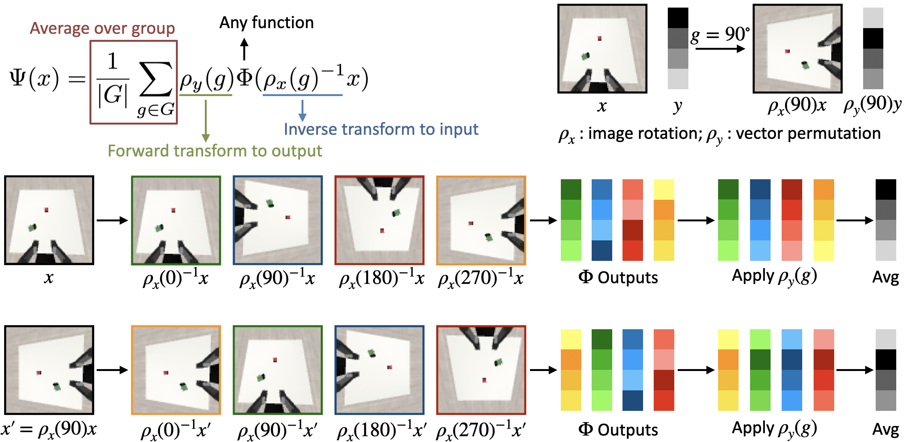

A Practical Guide for Incorporating Symmetry in Diffusion Policy
Abstract
Recently, equivariant neural networks for policy learning have shown promising improvements in sample efficiency and generalization, however, their wide adoption faces substantial barriers due to implementation complexity. Equivariant architectures typically require specialized mathematical formulations and custom network design, posing significant challenges when integrating with modern policy frameworks like diffusion-based models. In this paper, we explore a number of straightforward and practical approaches to incorporate symmetry benefits into diffusion policies without the overhead of full equivariant designs. Specifically, we investigate (i) invariant representations via relative trajectory actions and eye-in-hand perception, (ii) integrating equivariant vision encoders, and (iii) symmetric feature extraction with pretrained encoders using Frame Averaging. We first prove that combining eye-in-hand perception with relative or delta action parameterization yields inherent SE(3)-invariance, thus improving policy generalization. We then perform a systematic experimental study on those design choices for integrating symmetry in diffusion policies, and conclude that an invariant representation with equivariant feature extraction significantly improves the policy performance. Our method achieves performance on par with or exceeding fully equivariant architectures while greatly simplifying implementation.
Introduction

Goal. Bring symmetry gains to Diffusion Policy with minimal changes.
Key idea. Use simple modules: (1) use relative trajectory and an eye-in-hand view for invariance, (2) plug in an equivariant vision encoder, and (3) add Frame Averaging to any pretrained encoder.
Takeaway. These pieces together match or beat complex fully equivariant stacks, while staying easy to implement.
Invariant Property of Relative Trajectory

Relative trajectory represents actions in the gripper frame. If the world rotates/translates, the relative trajectory does not change — it is invariant. With eye-in-hand images, the observation is also invariant. The policy becomes simpler and learns faster.
Equivariant Vision Encoder

Compared with the original diffusion policy (left), our method (middle) uses an equivariant vision encoder followed by a standard diffusion head. Compared with the fully equivariant architecture (right), our method is much simpler and easier to implement, while achieving comparable performance.
Frame Averaging

Frame averaging is a simple technique to make pre-trained vision encoders equivariant. It averages the features of N transformed frames to get an equivariant feature.
Simulation Experiments
We evaluate our method on 12 MimicGen environments.
Stack
Stack Three
Square
Threading
Coffee
Three Piece Assembly
Hammer Cleanup
Mug Cleanup
Kitchen
Nut Assembly
Pick Place
Coffee Preparation
In most environments, relative trajectory significantly outperforms absolute trajectory.
Equivariant vision encoder significantly improves performance, reaching a comparable level to fully equivariant architectures.
Citation
@inproceedings{
wang2025practical,
title={A Practical Guide for Incorporating Symmetry in Diffusion Policy},
author={Dian Wang and Boce Hu and Shuran Song and Robin Walters and Robert Platt},
booktitle={The Thirty-ninth Annual Conference on Neural Information Processing Systems},
year={2025},
url={https://openreview.net/forum?id=e0Dn7dg395}
}